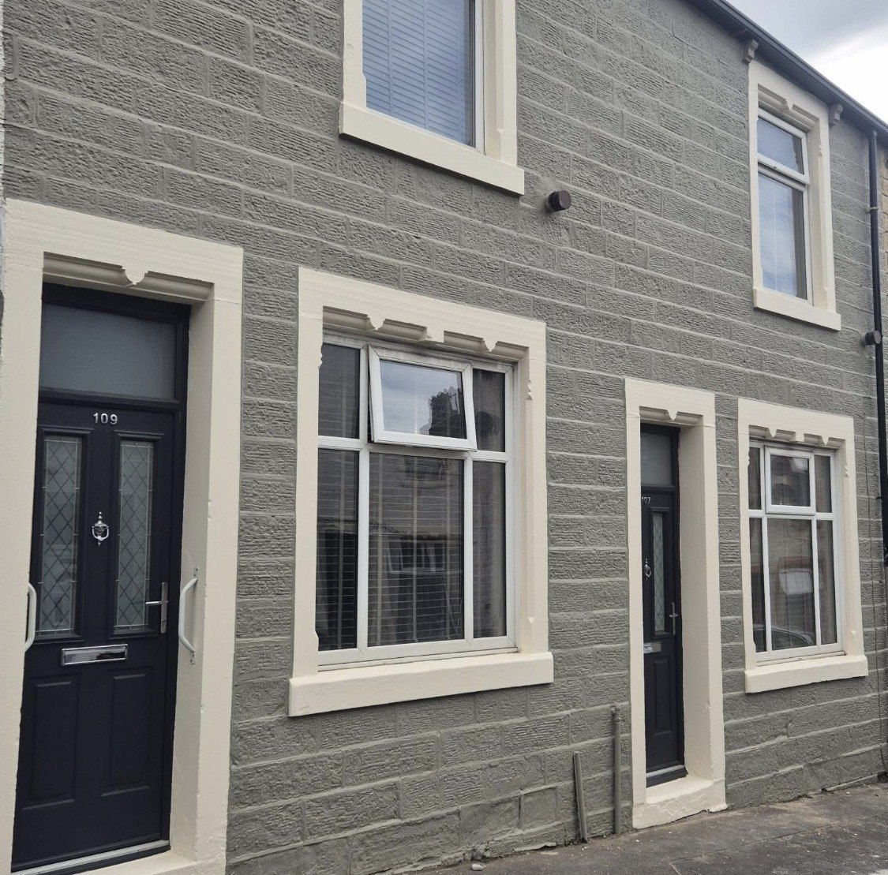
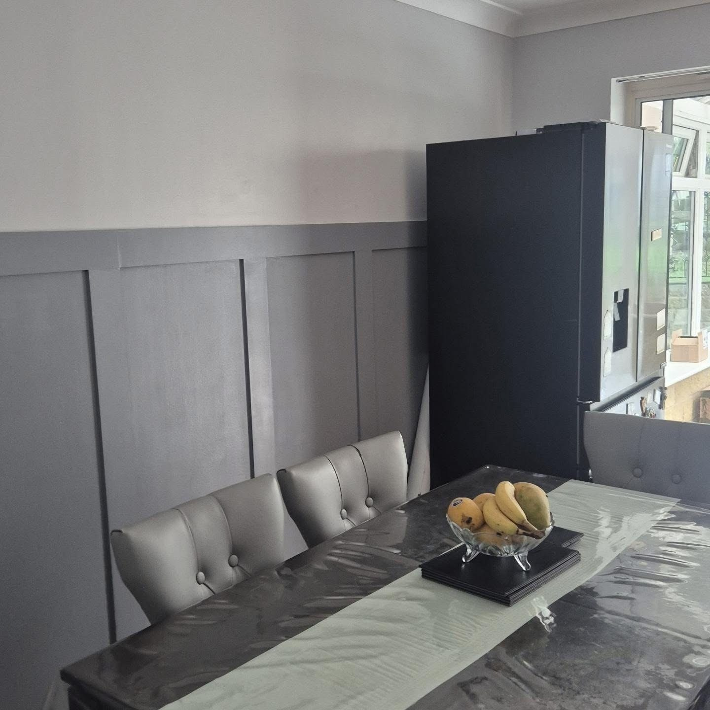
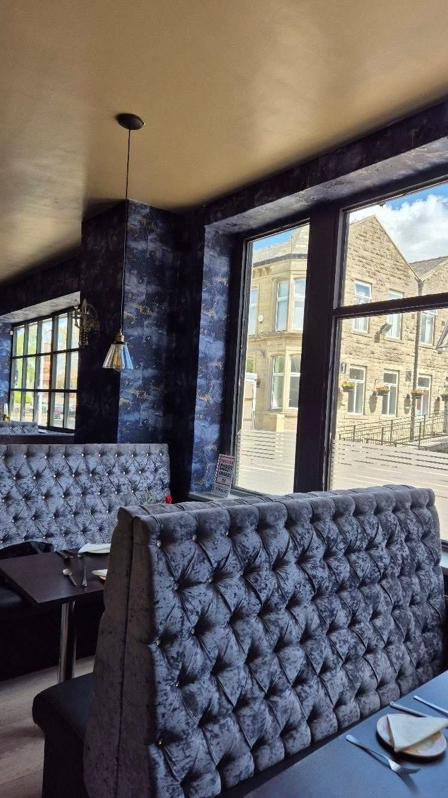
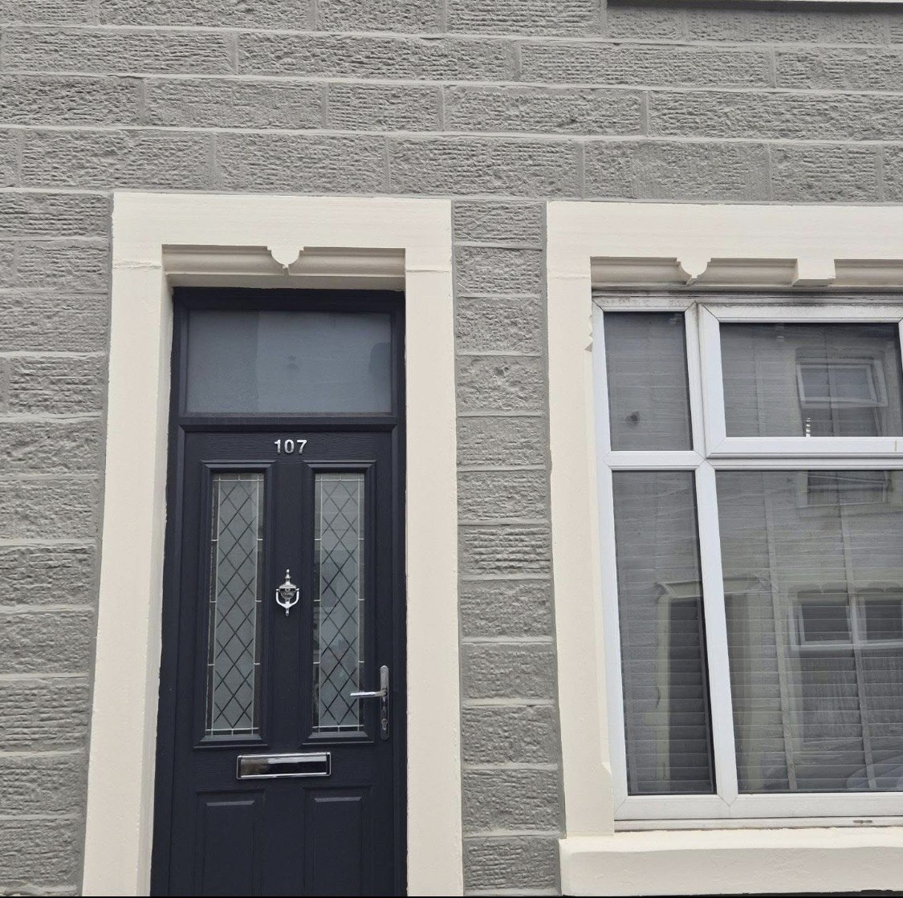
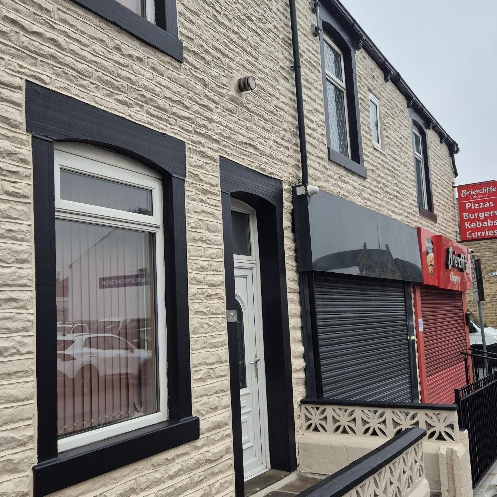
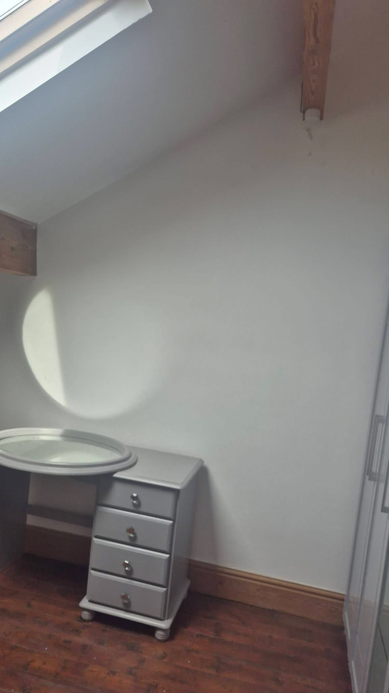
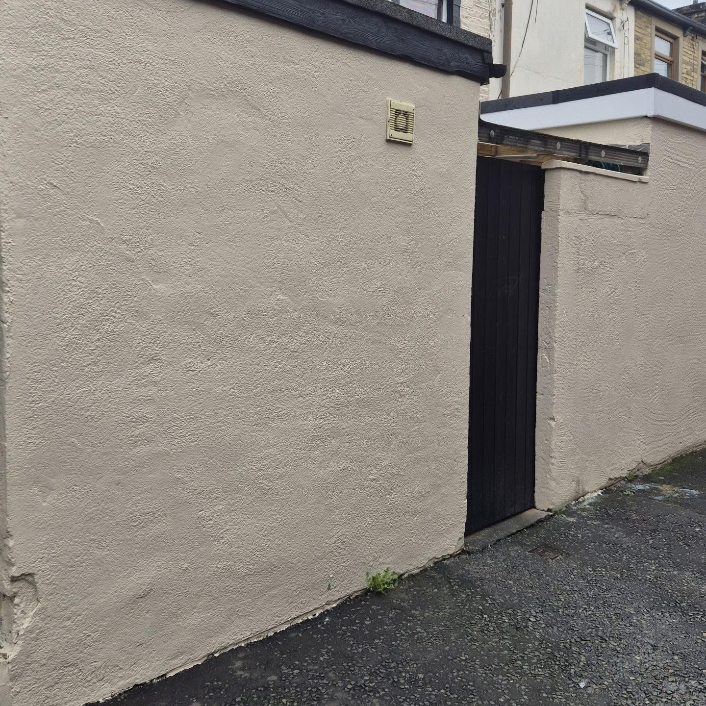
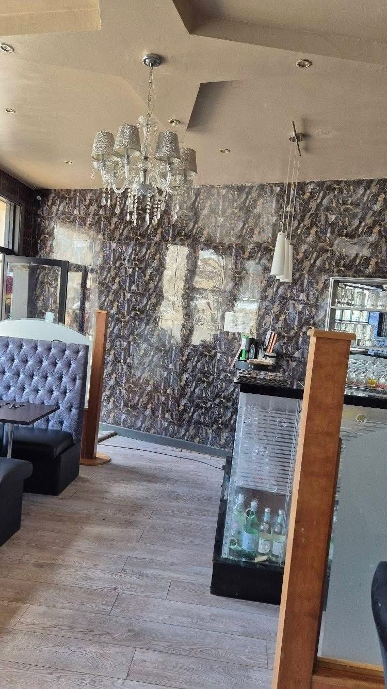
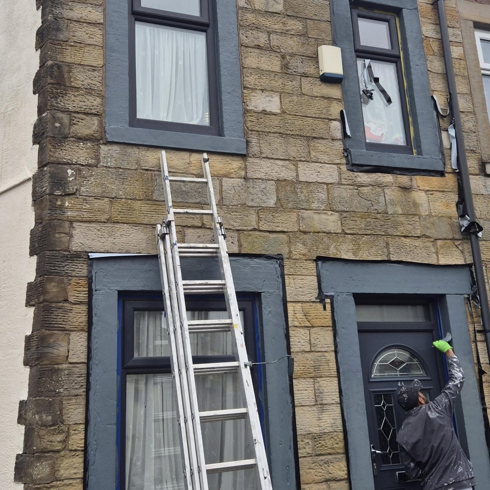
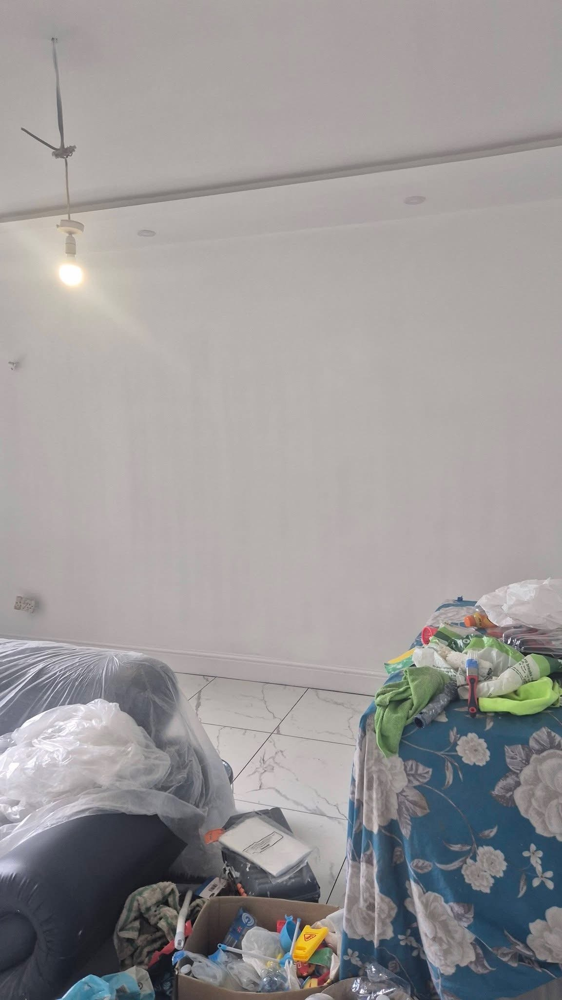

EXTERIOR DETAIL
First impressions, refreshed.
Contrasting door and window colours can change the whole look of a property. See the supplied exterior photos for recent examples.
Explore exterior painting ↗
AK Decorating Service brings fresh colour to interiors and exteriors in Burnley. View real projects and get in touch by phone or WhatsApp.
THE DIFFERENCE IS IN THE DETAILS
AK Decorating Service works on interiors and exteriors around Burnley. From a considered room refresh to crisp exterior colour, the work is about giving existing spaces a clean new finish.
See the work ↗WHAT WE CAN HELP WITH
Painting and decorating work shown through real spaces, with a straightforward way to enquire.

Walls, rooms and finishes that feel like home.
Explore interiors ↗Fresh colour and sharp details from the street.
Explore exteriors ↗
Statement surfaces that change a room’s character.
See finished rooms ↗
EXTERIOR DETAIL
Contrasting door and window colours can change the whole look of a property. See the supplied exterior photos for recent examples.
Explore exterior painting ↗OUR WORK
A selection of interior rooms, exterior finishes and work in progress.






PAINTING & DECORATING IN BURNLEY
Tell us what you have in mind. A photo and a few details are a good place to start.
Start your enquiry ↗GOOD TO KNOW
Yes. The supplied work includes interior room finishes and exterior painting. Send the details of the job you have in mind.
Yes. The form opens WhatsApp with your details ready. You can then attach photos of the space before sending.
AK Decorating Service has shared work in Burnley. Include your town or postcode so the location can be checked.
LET'S GET YOUR PROJECT STARTED
Send your room or exterior details, along with the location of the work. You can add photos in WhatsApp after opening the message.